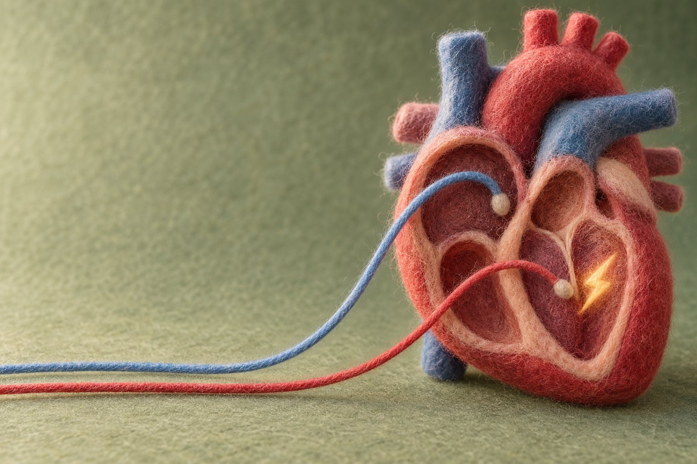

心臟電生理檢查是什麼？為什麼常和電燒一起做

我在門診，很多病人的主訴是心悸或突然昏倒，但心電圖看起來正常。心臟電生理檢查是把細導管經血管送進心臟，記錄心臟的電訊號，找出心律不整從哪裡開始。
心臟電生理檢查是怎麼做的？
心臟電生理檢查是從周邊血管放入多條電極導管，送到心臟裡面，記錄心臟內部的電訊號怎麼傳導，再用電刺激或藥物誘發心律不整，看它從哪裡開始、怎麼傳。這是台北榮總護理部衛教資料對這項檢查的說明。一般心電圖是從胸口與四肢的皮膚表面記錄，電生理檢查是直接在心臟裡面聽。
我會這樣跟病人解釋：做的時候人是躺在心導管室的檢查台上，醫師先消毒並麻醉穿刺的位置，通常在大腿根部（鼠蹊部）的靜脈，有時也會用頸部血管。導管在X光透視下送到心臟，不需要開刀。美國國家醫學圖書館（MedlinePlus）說明，檢查時病人是清醒的，可能會有心跳跳一下停一下、或突然變快的感覺；台北榮總則提到，檢查過程也可能採全身麻醉。
檢查前醫師會說明目的與風險，並請病人簽同意書；MedlinePlus 提到，檢查前通常需要禁食 6 到 8 小時，常吃的藥要不要調整，一定要先問過醫師，不要自己停藥。克里夫蘭診所（Cleveland Clinic）說明，單純的電生理檢查大約需要 2 到 4 小時。
什麼情況會需要做心臟電生理檢查？
有心律不整的症狀，但一般檢查找不到原因或無法決定怎麼治療時，醫師會考慮做心臟電生理檢查。MedlinePlus 列出的目的包括：測試心臟電傳導系統的功能、找出已知心律不整從哪裡開始、決定合適的治療、評估日後發生猝死等心臟事件的風險、確認藥物有沒有控制住心律不整，以及判斷需不需要裝心臟節律器或植入式心臟去顫器。
門診常見的情況，分成病人自己感覺到的和可以量到、看到的兩類：
- 病人自己感覺到的：突然開始、突然停止的心悸，心跳忽然變很快，胸悶、喘、頭暈、快要昏倒的感覺。
- 可以量到、看到的：心電圖或24小時心電圖記錄到心跳過快的發作、真的昏倒，或家族中有人年輕時突然過世。這類客觀表現通常就是該到心臟內科門診檢查的時機。
檢查結果可能找出的問題，包括心房顫動或心房撲動、心臟傳導阻滯、病竇症候群、上心室頻脈、心室頻脈與心室顫動，以及預激症候群（又稱WPW症候群）。症狀怎麼分，可以先看心律不整症狀怎麼分？太慢、亂跳、太快。
心臟電生理檢查和其他心律檢查差在哪裡？
一般心電圖和24小時心電圖是在身體外面記錄心跳，電生理檢查是在心臟裡面記錄，而且可以主動誘發心律不整，所以能找出異常電訊號的起點和路徑。下表整理常見的心律檢查和治療在做什麼：
| 項目 | 怎麼做 | 主要用途 |
|---|---|---|
| 心電圖 | 電極貼在胸口與四肢皮膚，記錄當下的心跳 | 抓到當下正在發生的心律 |
| 24小時心電圖 | 隨身帶著記錄器，持續記錄一整天 | 看日常生活中有沒有心律不整發作 |
| 心臟電生理檢查 | 導管經血管送進心臟，記錄並刺激電訊號 | 找出心律不整的起點與傳導路徑，評估要用什麼方式治療 |
| 經導管電氣燒灼術（電燒） | 導管找到異常位置後，破壞不正常的傳導路徑 | 治療心律不整 |
為什麼心臟電生理檢查常和電燒一起做？
因為導管已經在心臟裡，找到異常位置後，可以在同一次導管過程中接著電燒，不必讓病人再做一次導管。台北榮總護理部的衛教資料指出，心律不整的病灶確定後，會再以電氣燒灼術破壞、阻斷不正常的傳導路徑。MedlinePlus 也列出，電生理檢查的同一次過程中，可能一併做節律器植入或導管電燒。
不過檢查完不一定都要電燒。有些病人檢查後的結果，是改用藥物控制，或評估需要裝心臟節律器、去顫器，這也是電生理檢查要先把狀況查清楚的原因。想了解電燒本身，可以看心房顫動電燒是什麼；新一代的電燒技術，可以看脈衝場消融術（PFA）專題。
心臟電生理檢查有哪些風險？
心臟電生理檢查在多數情況下相當安全，但它是侵入性檢查，仍有風險。MedlinePlus 列出可能的風險包括：心律不整、出血、血栓造成栓塞、心包膜積液壓迫心臟（心包填塞）、心肌梗塞、感染、血管受傷、低血壓與中風。克里夫蘭診所也說明，所有侵入性檢查都有風險，醫院會採取預防措施降低風險。
檢查後的照顧，依台北榮總的衛教資料：穿刺的傷口會用厚紗布加壓止血，輕微瘀青和腫脹屬於常見情形，約2到3週會慢慢消退；如果有出血、疼痛、腫脹加劇，要馬上告訴醫護人員。檢查有做電燒的話，如果出現心悸或胸口灼熱感，是電燒後常見的情形，通常會持續1到2週。若出現噁心嘔吐、腹部疼痛、手腳沒力氣、說不出話或視力突然模糊，要立刻通知醫護人員。
想知道自己需不需要做，要看哪一科？
心悸、昏倒或心電圖有心律不整的病人，應該先到心臟內科做評估，由醫師決定是否需要電生理檢查。可以到新竹馬偕心臟內科門診找我，看診時間請見我的門診時間與掛號。沒有轉診單也可以直接到區域醫院或醫學中心看門診，只是部分負擔會比基層診所高；有轉診單可以減輕部分負擔。
如果檢查發現心跳過慢，要看的是心跳太慢怎麼辦？何時要裝節律器；如果是危險的心室心律不整，可以看心臟去顫器（ICD）誰要裝；節律器的基本概念，可以看心臟節律器衛教。
常見問題
問：心臟電生理檢查會痛嗎？
答：穿刺位置會先打局部麻醉，過程中多半是壓迫感，不是劇痛。MedlinePlus 說明，檢查時可能感覺到心跳漏拍或加速，這是誘發心律不整的過程；過程中有任何不舒服，要告訴醫護人員。
問：做完檢查一定要電燒嗎？
答：不一定。要看檢查找到什麼，有些病人是繼續用藥觀察，有些需要評估節律器或去顫器。是否電燒，由檢查結果與病人狀況一起決定。
問：做完檢查可以馬上回家嗎？
答：不一定。導管拔除後需要加壓止血並平躺一段時間，臥床時間依醫院做法與病情而定，克里夫蘭診所提到單純檢查後要臥床1到2小時，台北榮總的衛教則是平躺約2到6小時；是否住院觀察，要看有沒有做電燒和病人的狀況，由醫師決定。
延伸閱讀
本文為一般衛教，不能取代面對面診察。是否需要電生理檢查或電燒，要由心臟內科醫師依症狀、心電圖和病史評估。
參考資料
- MedlinePlus（美國國家醫學圖書館）：心內電生理檢查 Intracardiac electrophysiology study
- Cleveland Clinic：電生理檢查 EP Study 病人衛教
- 臺北榮總護理部健康e點通：心臟電生理檢查與經導管電氣燒灼術
每個人的狀況不同，文章不能取代門診評估。想知道自己適不適合，歡迎帶著過去的檢查報告來門診討論。